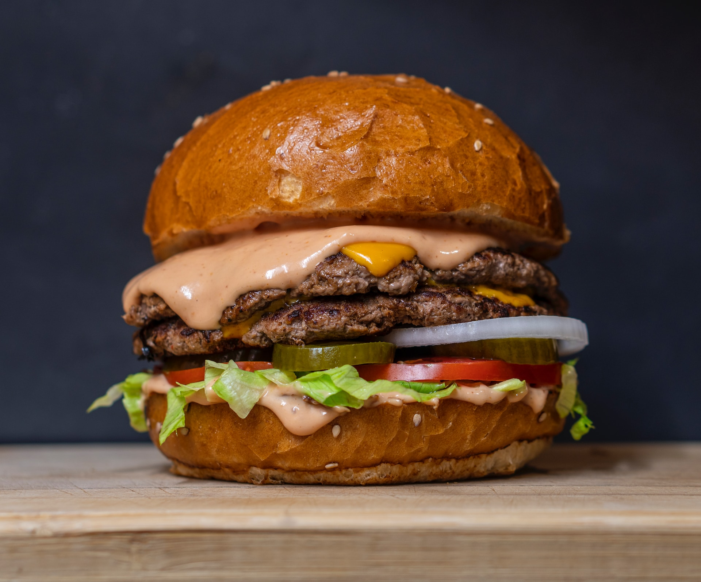

The Perfect Basic Burger

These burger patties are made with ground beef and an easy bread crumb mixture.
Begin by whisking the egg, salt, and pepper together in a large bowl. Then, add the ground beef and bread crumbs before forming the mixture into ¾-inch patties. Place the patties on a preheated grill and cook for six to eight minutes per side.
Make sure the beef's temperature reads at least 160 degrees F before serving, and you're ready to go. Top with classic condiments like mustard, ketchup, and mayo for full-fledged flavor.
Ingredients
- 1 large egg
- 1/2 teaspoon salt
- 1/2 teaspoon ground black pepper
- 1 pound ground beef
- 1/2 cup fine dry bread crumbs
Steps
- Preheat an outdoor grill for high heat and lightly oil grate.
- Whisk together egg, salt, and pepper in a medium bowl.
- Add ground beef and bread crumbs and mix with your hands or a fork until well blended.
- Form into four 3/4-inch-thick patties.
- Place patties on the preheated grill. Cover and cook 6 to 8 minutes per side, or to desired doneness. An instant-read thermometer inserted into the center should read at least 160 degrees F (70 degrees C).
- Serve hot and enjoy!